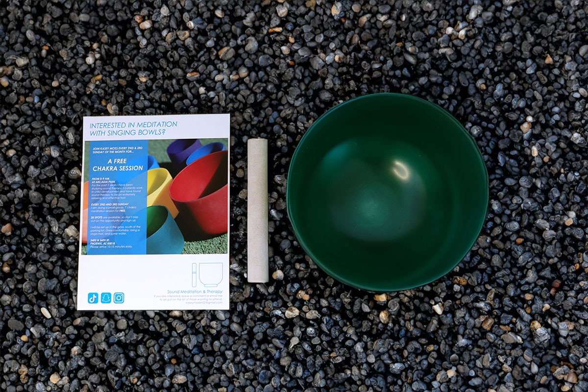

MEDITATION FLYER DESIGN FOR SOCIAL MEDIA & PRINT
This flyer was created to promote free chakra meditation sessions using singing bowls. The design needed to feel calming, balanced, and spiritually engaging while still being clear and informative. I used bright, clean photography and paired it with minimalist typography to communicate serenity, accessibility, and professionalism.
I also included event details, social media icons, and a light layout to make the flyer easy to read and visually inviting. The layout was designed for both digital and printed use, ensuring consistent quality across platforms.